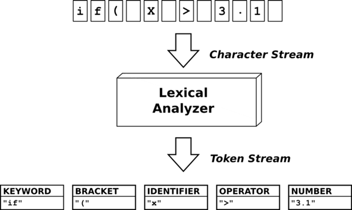
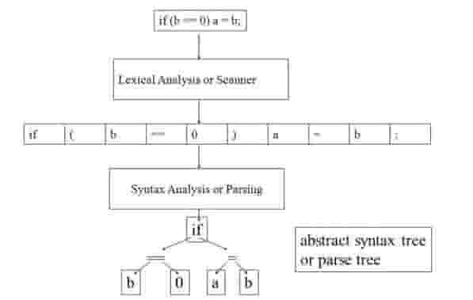

Создание компиляторов для специализированных языков программирования
Автор: Дручевский Д.В., Григорьев А.В.
Источник: VII Международной научно-практической конференции
(студенческая секция) – Донецк: ДонНТУ, 2021.
Аннотация
Дручевский Д.В., Григорьев А.В. Создание компиляторов для специализированных языков программирования. В статье описаны ключевые моменты трех этапов создания компилятора и указаны способы их реализации.
Введение
Согласно классификации компьютерного программного обеспечения, компиляторы относятся к программам системной обработки. Их функция - переводить программу с языка высокого уровня в машинный код [1]. В процессе перевода в программе такие уровни или слои, как алфавит, словарь, синтаксис выделяются и изменяются с сохранением семантики.
Технически любой язык можно как компилировать, так и интерпретировать. Но для каждого языка один из методов подходит больше, чем другой, и выбор парадигмы на ранних этапах определяет дальнейшее проектирование. В общем смысле интерпретация отличается гибкостью, а компиляция обеспечивает высокую производительность, но это лишь верхушка крайне сложной темы [2].
Цель написания данной статьи заключается в освещении проблематики компилирующих программ для специализированных языков программирования.
Лексический анализатор/лексер
Первый компонент компилятора – лексический анализатор. Роль этого компонента заключается в том, чтобы разделять текст программы на токены (рис. 1) [3].

Рисунок 1 – Разделение программы на токены
На первом этапе, сканировании, лексический анализатор обычно реализуется как конечный автомат, определяемый регулярными выражениями. Он кодирует информацию о возможных символьных строках, которые могут появляться в токенах. Например, целочисленный токен может содержать любую последовательность десятичных цифр. Во многих случаях первый непробельный символ может использоваться для определения типа следующего токена. Затем входящие символы обрабатываются один за другим до тех пор, пока не будет найден символ, не включенный в набор допустимых символов для указанного токена. В некоторых языках правила синтаксического анализа токенов немного сложнее и требуют обратного отслеживания при чтении последовательности.
Полученный таким образом токен содержит необработанный исходный текст (строку). Для того, чтобы получить токен со значением, соответствующим типу (напр. целое или дробное число), выполняется оценка этой строки — проход по символам и вычисление значения.
Токен с типом и соответственно подготовленным значением передаётся на вход синтаксического анализатора.
В качестве генератора лексических анализаторов можно использовать уже существующие. Например:
- lex – стандартный генератор в Unix;
- Flex – альтернативный вариант классической утилиты lex;
- JLex – генератор на Java;
- ANTLR – генератор нисходящих анализаторов для формальных языков;
- lexertl – генератор на C++.
Синтаксический анализатор
Второй компонент компилятора - это синтаксический анализатор (он же парсер). Его задача - разобрать текст программы. Этот компонент принимает список токенов в качестве входных данных и создает на выходе абстрактное синтаксическое дерево (АСД). Эта концепция сложнее, чем идея списка токенов, поэтому мы настоятельно рекомендуем вам изучить принципы синтаксических анализаторов и синтаксических деревьев хотя бы по ссылкам выше (рис.2).

Рисунок 2 – Место синтаксического разбора в модели компилятора
Входные данные парсера - это последовательность токенов и таблиц, таких как таблица внешнего представления, которые являются выходными данными лексического анализатора.
Результатом синтаксического анализа является дерево синтаксического анализа и таблицы, такие как таблица идентификаторов и таблица типов, которые вводятся для следующего сканирования компилятора (например, это может быть сканирование с проверкой типов).
Большинство известных методов анализа относятся к одному из двух классов, один из которых объединяет нисходящие алгоритмы, а другой - восходящие алгоритмы. Происхождение этих терминов связано со способом построения узлов синтаксического дерева: либо от корня (аксиома грамматики) до листьев (терминальные символы), либо от листьев к корню.
Нисходящие анализаторы строят вывод, начиная от аксиомы грамматики и заканчивая цепочкой терминальных символов. С нисходящими анализаторами связаны так называемые LL-грамматики.
Генератор кода
Третья и последняя часть компилятора - это генератор кода. Его роль - преобразовать АСД в машинный код или промежуточное представление.
Генератор исходного кода — это фрагмент кода, который выполняется во время компиляции, проверяет программу и создает дополнительные файлы, которые затем компилируются вместе с остальной частью кода.
Вот две основные возможности, которые он позволяет реализовать [4]:
- Получить объект компиляции, представляющий весь скомпилированный пользовательский код. Этот объект можно анализировать, и вы можете писать код, который работает с синтаксической и семантической моделями скомпилированного кода, как в случае с современными синтаксическими анализаторами.
- Создавать исходные файлы C #, которые могут быть добавлены к объекту компиляции во время компиляции. Другими словами, вы можете добавить исходный код в качестве входных данных для компиляции во время компиляции.
Проблемы существующих компиляторов кода
Ручное программирование для современных процессоров и ускорителей - долгий и дорогостоящий процесс, и сегодня необходимо новое поколение компиляторов, основные особенности которых следующие:
- высокоуровневое внутреннее представление с большой библиотекой программных преобразований;
- использование точных анализаторов зависимостей программного обеспечения, не увеличивающих время безотказной работы, в частности использование графов программных сеток;
- использование интерактивного режима компиляции;
- использование генератора кода HDL для программируемых процессоров и ускорителей.
Сегодня развитие компьютерной индустрии сдерживается отсутствием компиляторов, способных работать в современных многоядерных и многопроцессорных средах. Наличие соответствующих оптимизирующих компиляторов сократит время разработки приложений для многопроцессорных систем, снизит требования к квалификации программиста, снизит затраты на разработку, повысит надежность (из-за высокого уровня кода) и переносимость программы на уровень исходного кода.
Выводы
В данной статье были описаны основные этапы создания собственного компилятора. Создание каждого компонента компилятора, разбор основ и функций компонентов c иллюстрациями принципов их работы. Также были проведены обзоры на каждый этап создания, их роль в создание и основные технологии по их выполнению. Определены проблемы существующих компиляторов кода.
Литература
- Ахо А.В., Дж. Ульман. Теория синтаксического анализа, перевода и компиляции. Т. 1: Пер. с англ. – В.Н. Агафонова под ред. В. М. Курочкина. М.: Мир, 1978. – 614 с.
- ИНТУИТ. [Электронный ресурс] – Режим доступа: https://intuit.ru/studies/courses/26/26/lecture/805 - Назв. с экрана.
- Proglib. [Электронный ресурс] – Режим доступа: https://proglib.io/p/your-own-programming-language - Назв. с экрана.
- Хабр. Сообщество IT-специалистов. Режим доступа: https://habr.com/ru/post/503172/ - Назв. с экрана.